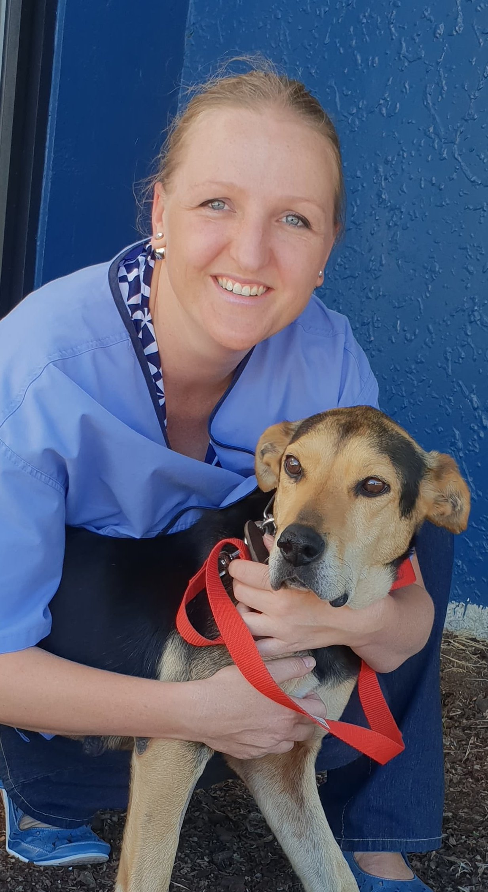
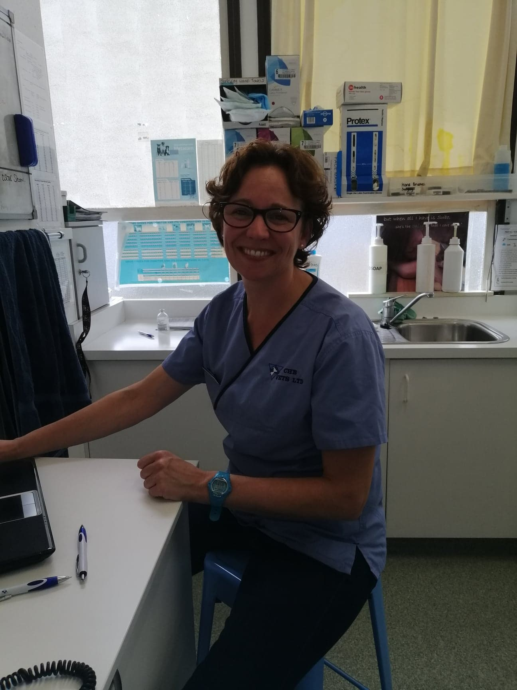
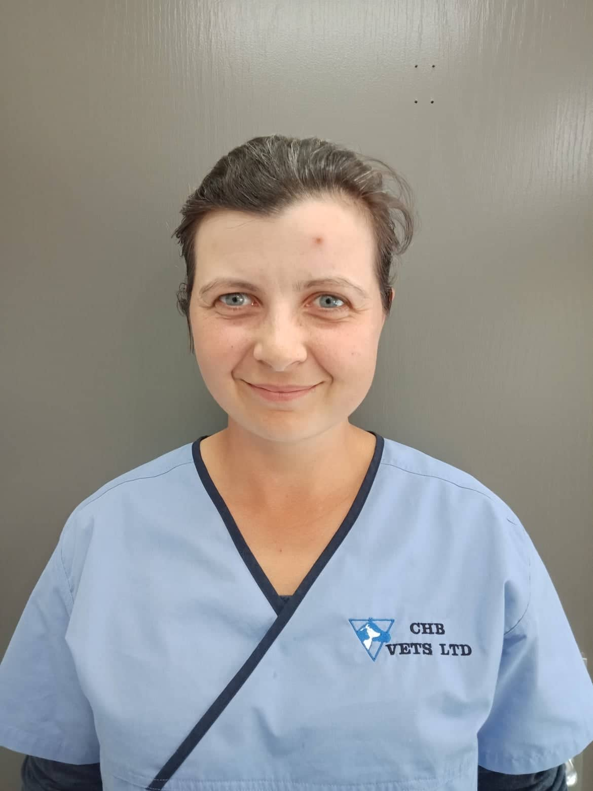
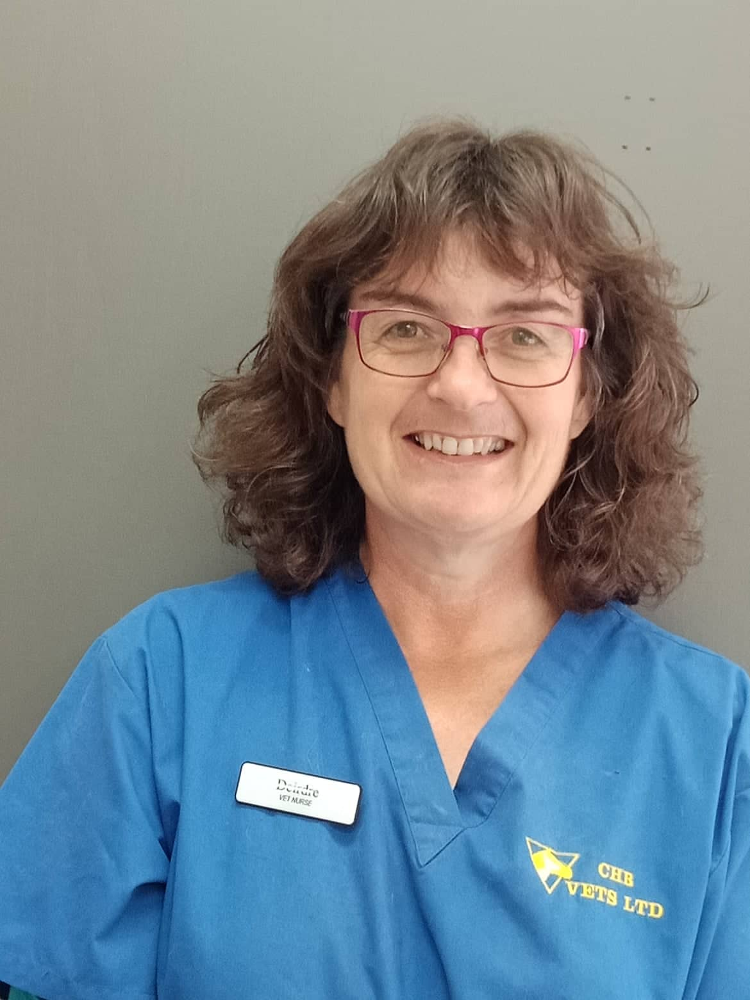
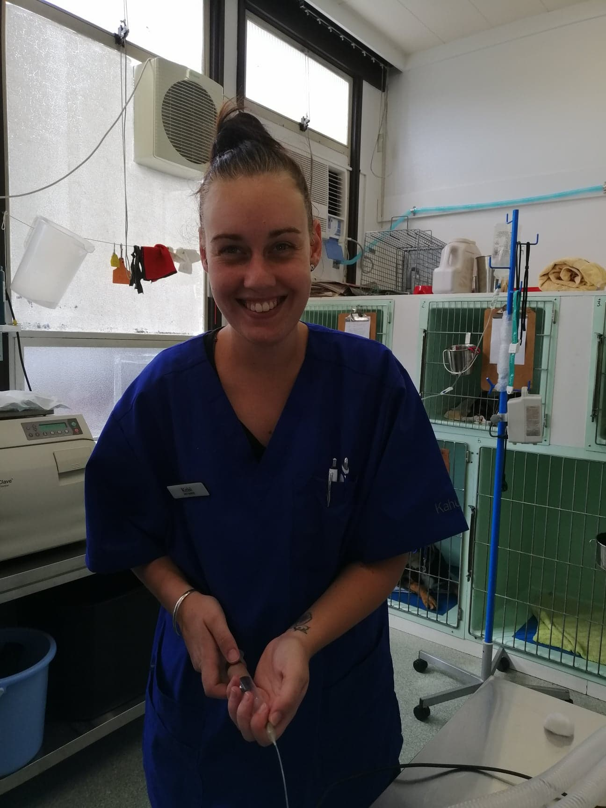
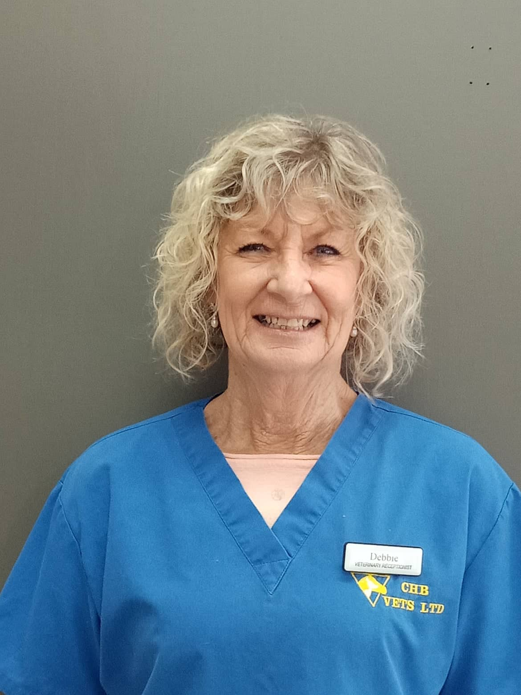
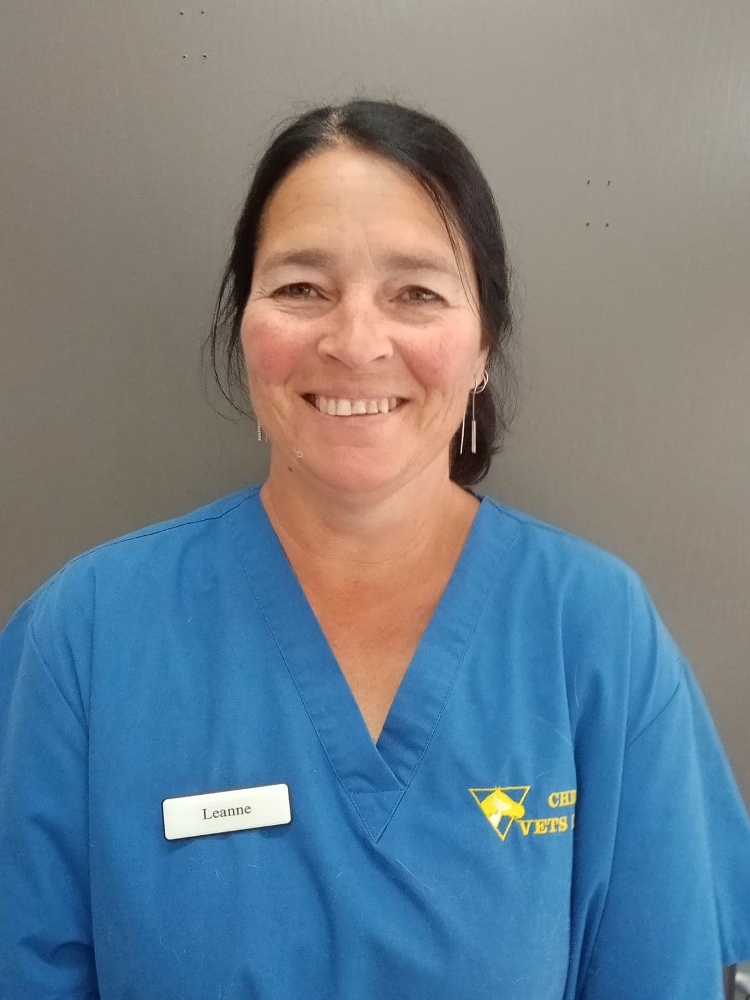

Our Team
Our receptionists and team will attempt to accommodate all requests to the best of our ability. Emergencies are accepted anytime our clinic is open. If you feel you have an emergency with your pet, please call us or come to the hospital immediately. If possible it is best to call before coming in so that a staff member can advise you on your particular emergency.

Karen Phillips
Veterinarian
BVSc, MVM, MANZCVS
Karen graduated from Massey Universtiy in 1991 and has been working as a mixed practice veterinarian ever since. She started her career in Oamaru and, after a stint overseas, moved back to Hawkes Bay. Karen has continued her learning - gaining membership to the Aust/NZ Collage of Vet Scientists in Pharmacology & Animal Welfare through examination. She Completed a Masters in Veterinary Medicine in 2016.
Erika Senekal-Basson
Veterinarian
NVE
Erika Senekal-Basson is from South-Africa. She graduated from vet school in 2008 and has been
working with a variety of animals since then. These varied from small to large animals and
game(wildlife). Her husband, little girl and Erika immigrated in February 2019 and are enjoying
everything about New Zealand. Although she has a special love for horses and dogs, she loves
working with any animal large or small, in the clinic or out on the farm. Things that make her happy,
apart from working with animals, include camping, horse riding, hiking, painting, being outdoors,
cycling, sleeping and family time! She hopes to be of service to you and your beloved animals, to
always give her best and treat them with lots of love and care.

Erika Senekal-Basson
Veterinarian
NVE
Erika Senekal-Basson is from South-Africa. She graduated from vet school in 2008 and has been
working with a variety of animals since then. These varied from small to large animals and
game(wildlife). Her husband, little girl and Erika immigrated in February 2019 and are enjoying
everything about New Zealand. Although she has a special love for horses and dogs, she loves
working with any animal large or small, in the clinic or out on the farm. Things that make her happy,
apart from working with animals, include camping, horse riding, hiking, painting, being outdoors,
cycling, sleeping and family time! She hopes to be of service to you and your beloved animals, to
always give her best and treat them with lots of love and care.

Renate Haveman
Veterinarian
BVSc
Renate graduated from Utrecht University, The Netherlands in 2011. After working in small
animal practice for a couple of years her family, husband Maurice and her two dogs Yuka and
Jill, made the big jump and moved to New Zealand. After enjoying life down in Canterbury for
almost 5 years, she took the opportunity to join the team at CHB Vets and has settled down in
Waipawa. Most days are pretty busy with 2 little boys to look after but if there is some spare
time she loves the outdoors or a quiet coffee or wine on the deck.
While enjoying general practice and looking after all the patients that come through the door or
waiting in the paddock, there is a special interest in complementary medicine. Renate is
currently finishing her certifications in veterinary acupuncture and canine rehabilitation.
Gudrun Clark
Veterinarian
NVE
Gudrun, better known as Cookie, graduated from Berlin University, Germany in 2015. She came to New Zealand with her husband and has worked as a mixed practice veterinarian. Cookie joined CHB Vets in 2018.

Gudrun Clark
Veterinarian
NVE
Gudrun, better known as Cookie, graduated from Berlin University, Germany in 2015 She came to New Zealand with her husband and has worked as a mixed practice veterinarian. Cookie joined CHB Vets in 2018.

Deirdre Thomson
Vet Nurse
VN
Deirdre joined CHB Vets in 2001 as our vet nurse. Over the years she has been a steady influence in our practice, training new vets and vet nurses. Her experience and dedication as a vet nurse is invaluable in helping with our patients in the hospital.
Kelsi Nalder
Vet Nurse
VN
Kelsi became part of our team in 2019 as a vet nurse. She did her study at EIT and through work placement we got to know her and therefore when a job came up she was our obvious choice. She has a dog and a cat and enjoys hanging out with them.

Kelsi Dillon
Vet Nurse
VN
Kelsi became part of our team in 2019 as a vet nurse. She did her study at EIT and through work placement we got to know her and therefore when a job came up she was our obvious choice. She has a dog and a cat and enjoys hanging out with them.

Debbie Dillon
Veterinary Receptionist
Debbie joined CHB Vets in 2018 as our veterinary receptionist. She comes from a background in farming and is the friendly face who greets you on the phone and when you come into the clinic.
Leanne Holding
Casual Receptionist
Leanne has been our 'Saturday girl' since 2015 and is the helpful, friendly person you will see at the front desk.

Leanne Holding
Casual Receptionist
Leanne has been our 'Saturday girl' since 2015 and is the helpful, friendly person you will see at the front desk.